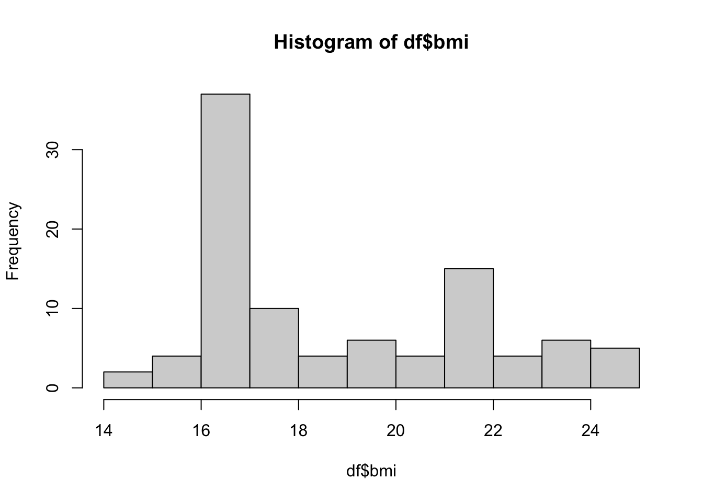

# Load necessary libraries
library(tidyverse)
library(cmdstanr)
library(bayesplot)
bayesplot_theme_set(theme_default(base_size = 8, base_family = "sans"))
library(pROC)
library(missRanger)
# Set project root
proj_root <- here::here()WCST, PRL, and Task Switching for Discriminating AN Patients and Healthy Controls
Demographic Information
Project Overview
This project aims to compare the effectiveness of different cognitive tasks (Wisconsin Card Sorting Test, Probabilistic Reversal Learning, and Task Switching) in discriminating between anorexia nervosa (AN) patients and healthy controls.
Setup
Data Preparation
d <- rio::import(
file.path(proj_root, "data", "demo_info", "demo_info.csv")
) |>
dplyr::select(-c(stim, t, a, v, alpha_neg, alpha_pos)) |>
distinct()
d %>%
group_by(diag_cat) %>%
summarize(
n = n_distinct(subj_code)
)# A tibble: 4 × 2
diag_cat n
<chr> <int>
1 AN 36
2 BN 12
3 HC 177
4 RI 35source(file.path(proj_root, "data", "list_participants.R"))
d <- d %>%
mutate(
group = case_when(
diag_cat %in% c("AN", "BN") ~ "PA",
TRUE ~ diag_cat
)
)
d %>%
group_by(group) %>%
summarize(
n = n_distinct(subj_code)
)# A tibble: 3 × 2
group n
<chr> <int>
1 HC 177
2 PA 47
3 RI 35temp <- d |>
dplyr::filter(group == "PA")
d_an <- temp[-46, ]
d_an$group <- "AN"
length(unique(d_an$subj_code))[1] 47# HC
hc_codes_list <- c(
unique(d[d$subj_code %in% participants_list[[2]], ]$subj_code),
"ag_no_2000_02_12_330_f", "al_lu_1997_03_21_166_f",
"al_ma_2001_03_01_678_f", "al_mu_2001_06_18_052_f",
"al_or_2001_08_15_668_f", "al_pa_2000_12_20_624_f",
"al_su_2001_03_07_759_f", "al_va_1999_01_05_941_f",
"al_zu_1997_04_02_880_f", "al_zu_2001_03_12_239_f",
"an_am_1996_05_12_176_f", "an_ma_1995_01_07_728_f",
"sa_pa_2001_05_14_311_f", "no_sp_2002_01_02_892_f"
)
d_hc <- d[d$subj_code %in% hc_codes_list, ]
d_hc$group <- "HC"
length(unique(d_hc$subj_code))[1] 50# d_ri <- d |>
# dplyr::filter(group == "RI")
# d_ri$group <- "RI"
# length(unique(d_ri$subj_code))
df <- rbind(d_an, d_hc)
d$group <- factor(d$group)df |>
group_by(group) |>
summarize(
n = n_distinct(subj_code),
avg_age = mean(age),
se_age = sd(age) / sqrt(n())
)# A tibble: 2 × 4
group n avg_age se_age
<chr> <int> <dbl> <dbl>
1 AN 47 20.7 1.03
2 HC 50 21.4 0.424df$group <- factor(df$group)
df$bmi <- ifelse(df$group == "AN" & df$bmi > 18, 17, df$bmi)
df$bmi <- ifelse(df$group == "HC" & df$bmi > 25.5, 22, df$bmi)
df |>
group_by(group) |>
summarize(
avg_bmi = mean(bmi),
se_bmi = sd(bmi) / sqrt(n()),
n = n_distinct(subj_code)
)# A tibble: 2 × 4
group avg_bmi se_bmi n
<fct> <dbl> <dbl> <int>
1 AN 16.7 0.0966 47
2 HC 21.1 0.322 50hist(df$bmi)
df |>
group_by(group) |>
summarize(
bsq = mean(bsq14_tot),
ros = mean(ros_tot),
dass_d = mean(dass21_d),
dass_a = mean(dass21_a),
dass_s = mean(dass21_s),
sias = mean(sias_tot),
avg_mps_cmd = mean(mps_cmd),
avg_mps_ps = mean(mps_ps),
avg_mps_pepc = mean(mps_pepc),
avg_mps_or = mean(mps_or),
avg_mps_tot = mean(mps_tot),
eat26_dieting = mean(dieting),
eat26_bul = mean(bulimia),
eat26_oc = mean(oral_control)
)# A tibble: 2 × 15
group bsq ros dass_d dass_a dass_s sias avg_mps_cmd avg_mps_ps
<fct> <dbl> <dbl> <dbl> <dbl> <dbl> <dbl> <dbl> <dbl>
1 AN 60.8 22.1 11.1 8.13 12.7 36.7 45.1 25.1
2 HC 39.5 28.2 7.28 5.02 9.2 28.3 38.8 21.3
# ℹ 6 more variables: avg_mps_pepc <dbl>, avg_mps_or <dbl>, avg_mps_tot <dbl>,
# eat26_dieting <dbl>, eat26_bul <dbl>, eat26_oc <dbl>